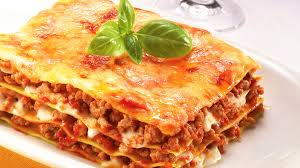

Lasagne

DIE Lösung gegen Heißhunger und das Schönste: Am zweiten und dritten Tag schmeckt sie noch besser. Für meine hausgemachte Lasagne nehme ich folgendes:
- 1000g gemischtes Hack
- 1x Zuchhini
- 3x Paprika
- 1/2 Gemüsezwiebel
- 3x Knoblauchzehen
- 2x geriebener Gratinkäse
- 2x Dosen passierte Tomaten
- 1x gegrillte Paprika im Glas
- Lasagneplatten
- Bündel Karotten
- 200g Creme fraiche
- Gewürze: Italienische Kräuter, Paprikapulver, Salz & Pfeffer
Und so bereitest du die Lasagne zu:
- Das Hackfleisch in Raps- oder Sonnenblumenöl scharf anbraten.
- Sobald das Fleisch dunkelbraun ist, mit Wein ablöschen und Hitze abdrehen.
- Erst jetzt mit Salz und Pfeffer würzen!
- Gemüse in Würfel schneiden und zunächst die Zwiebel und den Knoblauch bei mittlerer Hitze glasig dünsten
- Beides zum Fleisch hinzugeben.
- Nun das sämtliche Gemüse in einen Topf geben und mit etwas Olivenöl 10-15min dünsten. In der Zwischenzeit die gegrillte Paprika, samt passierten Tomaten in einen Mixxer geben. Ich gebe bereits hier italienische Kräuter, Paprikapulver, Salz und einen TL Tomatenmark hinzu. Die Soße sollte nicht zu sauer schmecken.
- Jetzt wird die Soße und das Hackfleisch in das gedünstete Gemüße getan. Bei halbgeöffneten Deckel, die Soße bei leichter Hitze für ca. 45min abkochen lassen. Wer mag, kann noch 1-2 Lorbeerblätter hinzu geben!
- Den Inhalt in mehreren Schichten mit den Lasagneplatten in eine Auflaufform verteilen. Das Creme fraiche mittig und den Käse ganz zum Schluss auf der obersten Schicht verteilen
- Bei 140Grad Celsius ca. 45 Minuten backen, bis der Käse eine dunkel goldene Farbe erhält
- Genießen!